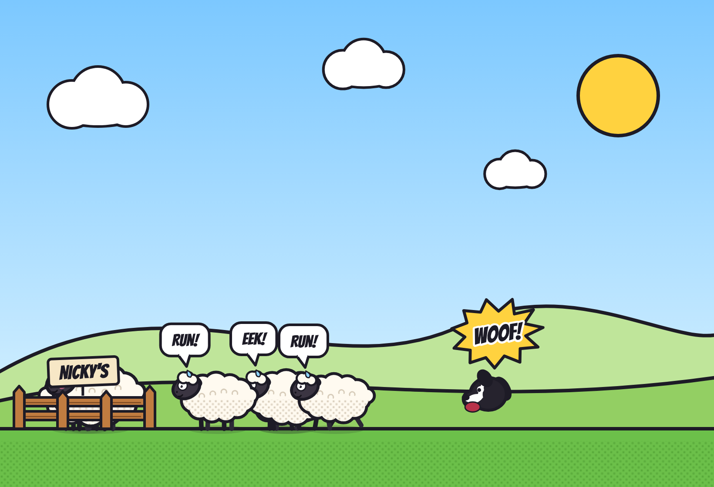
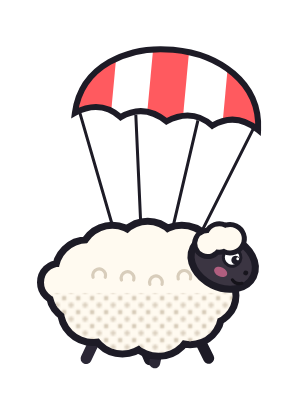
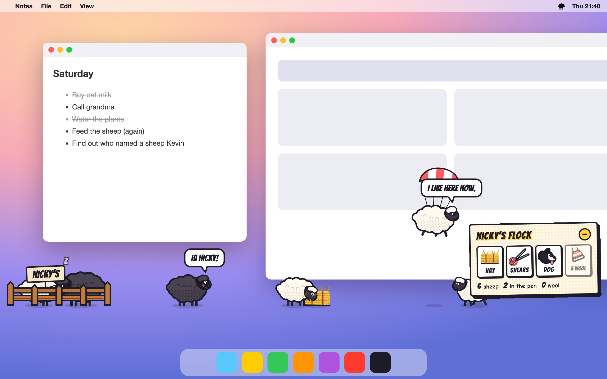
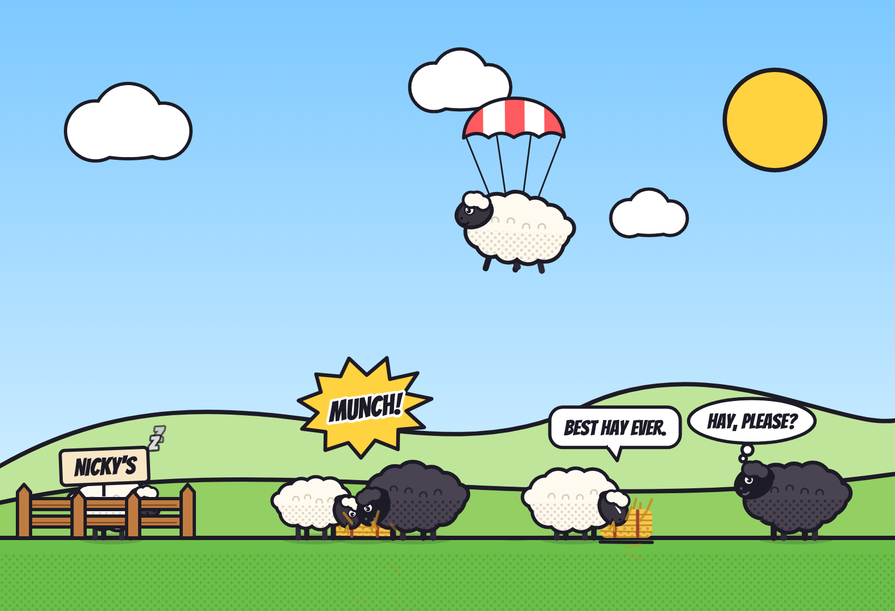
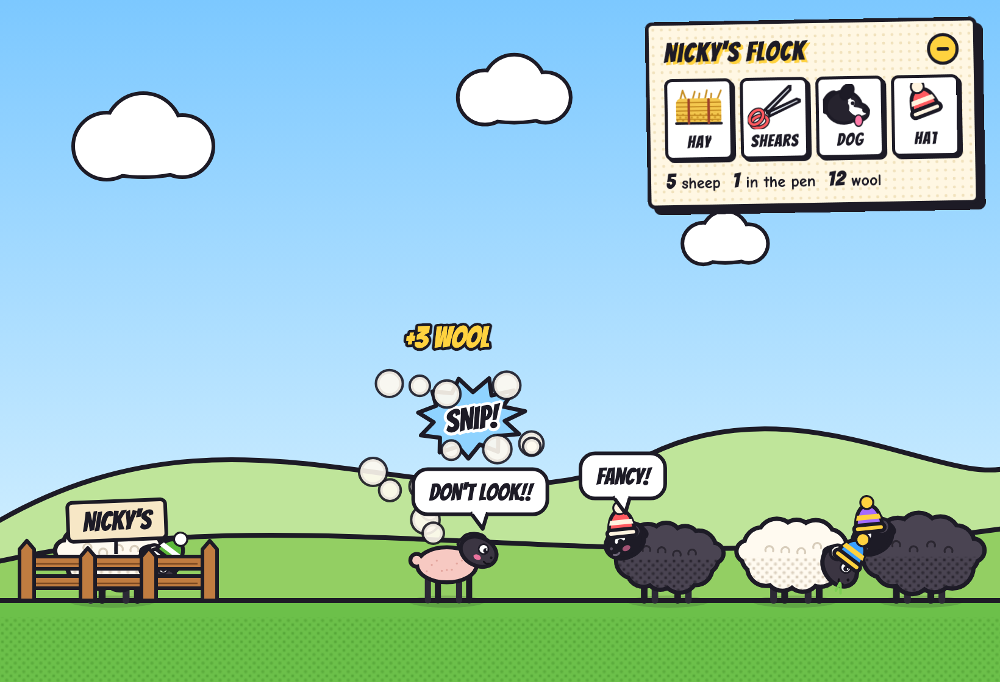

Whistle for the dog
The sheepdog follows your cursor and the sheep run away from it. Steer them into the pen and they stay put. A hungry sheep left outside may wander off.
They arrive by parachute, wander along the bottom of your screen and baa now and then. Herd them into the pen with a sheepdog, feed them hay, shear them and knit them hats.
Version 1.0.0. No account, no ads, nothing to buy.


New sheep turn up every few minutes. What happens next is up to you.

The sheepdog follows your cursor and the sheep run away from it. Steer them into the pen and they stay put. A hungry sheep left outside may wander off.

Drop a bale anywhere and hungry sheep trot over to munch it. Put the hay in the pen and they follow it in.

A woolly sheep gives up to three wool. Five wool knits a bobble hat, and you choose who gets to wear it.
The same sheep as in the app, in a meadow of their own.
Uninstall it like any other app, under Settings → Apps.
Signed by the developer and notarized by Apple, so it opens without warnings.